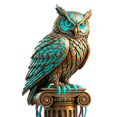

Saltar al contenido principal

Oráculo
home
Inicio
view_kanban
Horizontes
folder_open
Proyectos
science
Hábitos
directions_run
Muévete
calendar_month
Calendario
donut_large
Rueda
explore
Valores
auto_stories
Diario
emoji_events
Logros
menu
mic
cloud_off
save
help
settings
inbox
add
Capturar
0
pendientes
Cargando...